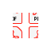

アクセシビリティ超入門
勉強会
社内で行った勉強会で使用したスライドのリメイクです。情報が伝わらないスライドを用意して、どうやったら情報が伝わるスライドになるかを伝えながらアクセシビリティを学べる内容にしました。
X（旧Twitter）: @taichi
勉強会
社内で行った勉強会で使用したスライドのリメイクです。情報が伝わらないスライドを用意して、どうやったら情報が伝わるスライドになるかを伝えながらアクセシビリティを学べる内容にしました。
勉強会
社内で行った勉強会で使用したスライドのリメイクです。見た目は同じ、でも実装方法が違う3種類のアコーディオンメニューを例に、アクセシビリティが高いUIについて説明しました。
勉強会
社内で行った勉強会で使用したスライドのリメイクです。著者由来とコンテンツ由来の違いやroleによってルールが変わることなどに触れながらアクセシブルな名前を学べる内容にしました。
ブログ
エンジニア視点だけでなく、デザイナー視点でもアクセシビリティをやっていきたいと思い受験しました。受験を通して学習した内容をまとめています。
ロゴはありません
ブログ
同期のメンバーと行ったアクセシブラリを記事にしました。現職のオフィスが入っているビルで、アクセシビリティに関連しそうなものを見つける取り組みをしました。
Figmaプラグイン
変数設定の効率化を図るために作成しました。
Figmaプラグイン
デザインデータがPhotoshopで作られる現チーム。Photoshopではアイコンサイズを揃えるのが難しいということで、アイコンのサイズ調整だけでもFigmaを使うのはどうでしょうと提案し、簡単にサイズを揃えられるプラグインを開発しました。